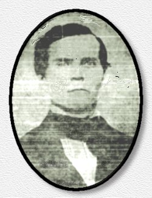

|
|
||||
|
John Peter Pegram |
 |
|||||||
| From Some
Middle Tennessee Pegrams and Their Ancestors by Dorothy Pegram
Roland
|
||||||||
| John Peter was
born in Virginia, April 6, 1818, the son of George Scott Pegram, Junior,
a Petersburg banker. It is not certain which of his father's two wives
was his mother. He is believed to have been born in Dinwiddie County. He
moved to the Pegram, Tennessee area of, then Davidson County, between
1820 and April 18, 1823, with his father and brothers and sisters, as a
small child, the youngest of nine children. John's father is believed to
have built a beautiful colonial mansion on land next to the river, and
where Interstate 1-40 now is. The farm later became the property of the
Anderson family.
On December 3, 1838, he purchased seventy acres of land from Joseph S._____ , on Harpeth River.He was only twenty years old at the time. He married Pernina Emily (Nina) Ussery, August 22, 1841, in Davidson County, Tennessee,° daughter of Maston and Elizabeth (Fowler) Ussery, who were from Muddy Branch, Tennessee. The Fowlers had come to Cheatham County from North Carolina, around 1800. Maston (Mastin) was born in 1800, in North Carolina. He and Elizabeth had married September 17, 1818. She was born in 1803. On February 12, 1842, he received a tract of land on Harpeth River from his father, He built a two room and loft home, on what is now, Thompson Road, which still stands. On January 2, 1847, he acquired more land two hundred and eighty and one half acres, from his father as part of his inheritance. This land was located in the Thompson Road area of, what is now, the town of Pegram, and lay on both sides of the Harpeth River. John Peter was a farmer and became an extensive land owner, in the Pegram, Tennessee area and elsewhere. On January 2, 1847, he was given more land, two hundred and eighty and one half acres, as part of his inheritance from his father, George Scott Pegram, Junior. By 1865, John Peter owned thirteen hundred and fifty acres of land in, what is now, Pegram.
|
||||||||
|
1850 Davidson Co., Tn. Census Family #867 p.658 |
||||||||
| Pegram | John | 34 | Va. | |||||
| Pernina | 32 | Tenn. | ||||||
| William | 07 | Tenn. | ||||||
| Elizabeth | 06 | Ten.n. | ||||||
| Lydia | 03 | Tenn. | ||||||
| John | 02 | Tenn | ||||||
| Edward | 34 | Va. | ||||||
| As shown by the census, John Peter's brother, Edward, was living in his household, and working for him as a farm laborer. Edward's wife, Kitty, was listed as the head of a separate household, and their nine children living with her. John Peter and Pernina had a daughter, Cornelia, born October 15, 1850, and another daughter, Martha A., born May 4, 1851. Martha died February 3, 1855, of scarlett fever, and five days later Cornelia died of the same disease. According to tradition, Pernina, "Nina", had visited a neighbor whose children were ill with scarlet fever. She had worn a long shawl. After she returned to her home, without thinking, or not knowing the risk, she put the shawl on the bed. Cornelia and Martha played on the bed where the shawl was, caught the disease and died.° Scarlett fever was very common in those days, and took the lives of many small children. On July 27, 1853, Roger Pegram acquired land, in the 16th District of Davidson County,° from John Peter Pegram.° December 2, 1853, he obtained land in Davidson County, from his brother-in-law, Wright Mays.
|
||||||||
|
1860 Cheatham Co., Tn. Census |
||||||||
| Pegram, | John P. | 42 | ||||||
| P.E. | 40 | |||||||
| Wm. N. | 17 | |||||||
| E. F. | I 5 | |||||||
| L.A. | 13 | |||||||
| John J. | 11 | |||||||
| The 1860 census should read, Wm. M., instead of Wm. N. The initials E.F. stand for Elizabeth F., L.A., Lydia Ann, and John J., John James. John Peter purchased two tracts of land, totaling one hundred and eighty-two acres, from John N. Barclift, for seventy eight hundred and twenty dollars, on March 5, 1861, in District 11.The first tract bordered the William Newsom property on the east, then went west with the road, then south across the railroad, on to Harpeth River, then back north to Hutton's and Newsom's lines. August 23, 1865, John P. Pegram acquired land on Whites Creek Pike, in Davidson County, from Thomas J. Cole. On January 12, 1867 he obtained more land on Whites Creek Pike, from James A. Stewart. January 18, 1867, he bought lots on Smiley Street, in Davidson County. John Peter died May 24, 1867 at the age of forty-nine of "stomach trouble."He left the above mentioned Barclift tract of land to his daughter, Elizabeth, and the two hundred and eighty and one half acres in the Thompson Road area to his son, William Mastin. He divided his other land between his wife and children, but stipulated that at his wife, Pernina's death, or remarriage, her land would go back to their children. He willed a one hundred acre tract of land to a nephew, William James Pegram, son of his deceased brother, Thomas Isles. This property bordered Joseph Kellam's and Benjamin Woodward's land.At the time of his death, he owned a general store on what is now, Thompson Road, in Pegram. His daughter, Bettie (Pegram) Walkup was clerking in it. He willed her four hundred dollars out of the proceeds of the store. He appointed Pernina and his son, Mastin, executrix, and executor, respectively, of his will. At his death, he also owned four lots in the town of Edgefield. Edgefield was incorporated by the city of Nashville, and is now part of East Nashville. It is one of the older sections of the city, and is in the process of restoration by new owners of the property. These lots he willed to Pernina, with the above stipulation, that if she died or remarried the property would go back to their children. John Peter's son, John James, was left the land that is now part of the Anderson farm. He left Lydia (Pegram) Holt, his daughter, a tract of land in the Thompson Road area, also Janurary 20, 1868, Pernina, acting as executrix of her husband's will executed the transfer of two tracts of land in what is now, Pegram, totaling two hundred and eighty and one half acres, to their son, William Mastin Pegram. The first tract of seventy-nine and one half acres, bordered land belonging to his uncle, Roger Pegram, on the east Benjamin Woodward's on the west, and William Kellam's land on the north, and ran on to the Harpeth River. The second tract joined his brother's land, on the northeast corner, then ran south with his sister, Lydia Ann Holt's east boundary, on to Harpeth River, then south to the road. Part of this land later became the Greer-Graves Subdivision. On the same date, Pernina, according to the directions in her husband's will, executed a deed to their daughter, Lydia Ann (Pegram) Holt, for a seventy-nine and one half acre tract which bordered a corner of John James's property, the Harpeth River, her brother William Mastin's corner, and Benjamin Woodard's south boundary." She also deeded her a tract containing one hundred and thirty-eight acres, which bordered the Kellam Road. John Peter is buried in the family graveyard, near his old home, between Thompson Road and Carol Dr The burial place of Pernina is not known. Ellen, buried here, was the first wife of William Mastin. Mastin is buried by his second wife, Martha Ann (Cato) Williams, in Mt. Olivet Cemetery, Section 16, in Nashville, Davidson County. After the death of John Peter Pegram, Pernina married Joseph H. Mays on August 28, 1870 in Davidson Co., Tennessee. She died in `878 of complications from a hip fracture. She was riding horseback, side salle, to visit her son, John James, and his family. The horse shied at the River Harpeth Gate, and she fell off, breaking her hip. See the Will of John Peter Pegram This biographical sketch is taken from Dorothy Roland Pegram's book, Some Pegrams of Middle Tennessee and Their Ancestors. Sources for this sketch included in the book are: Davidson Co., Tn. Census-1850. |
||||||||